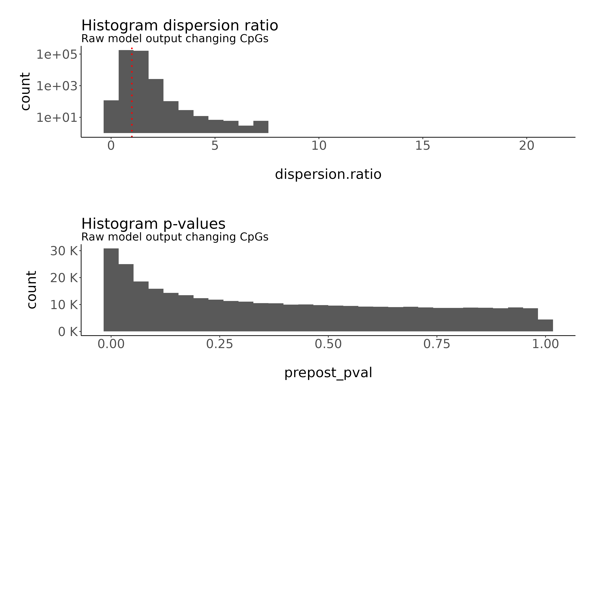
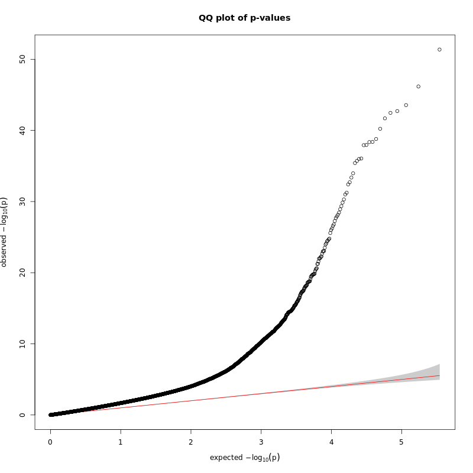
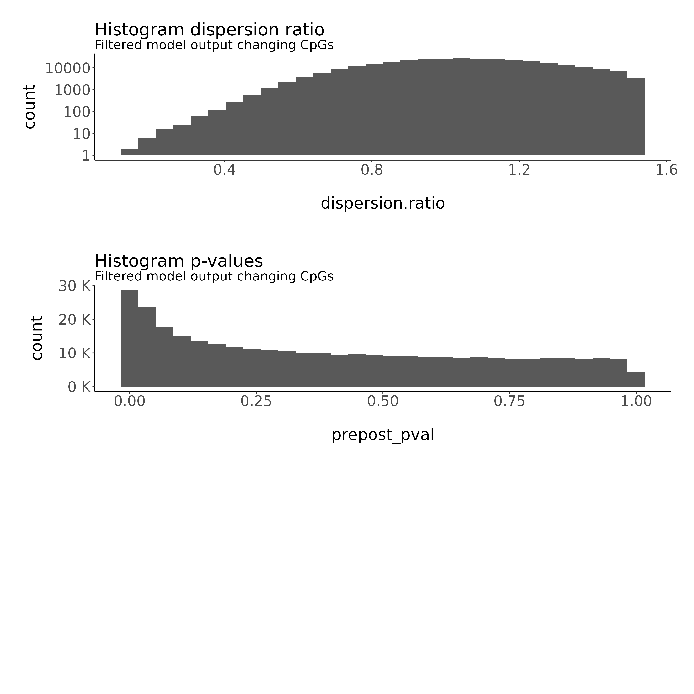
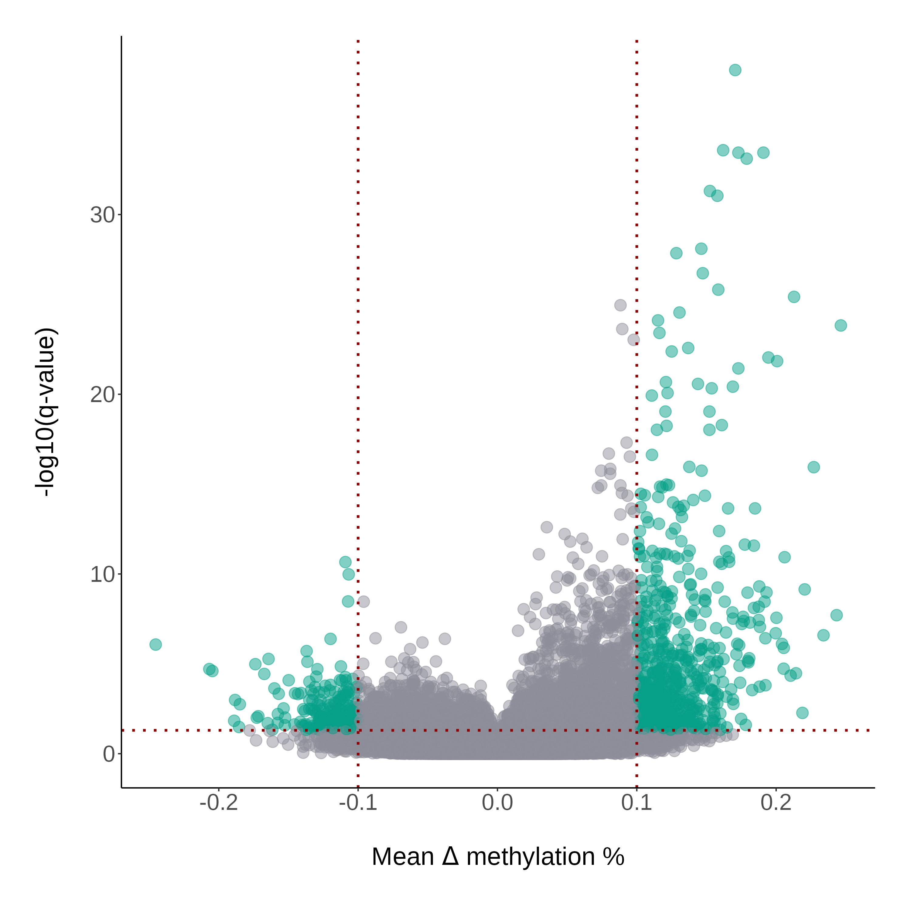
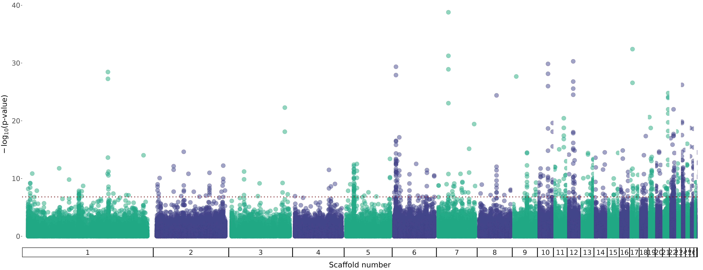
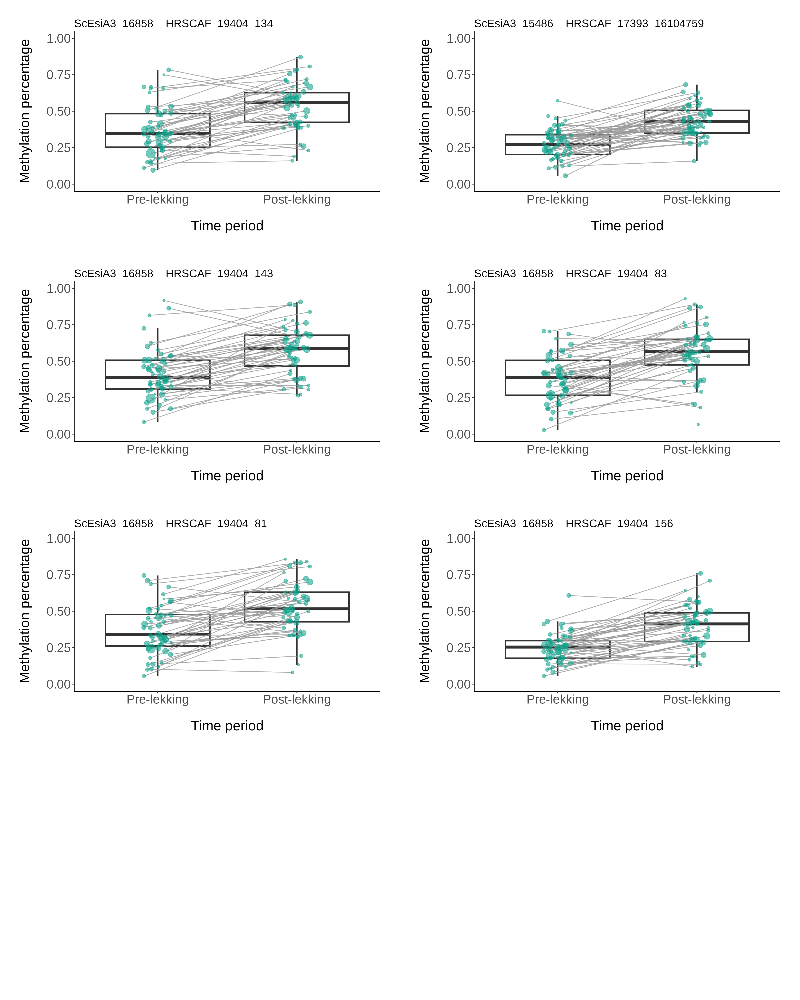
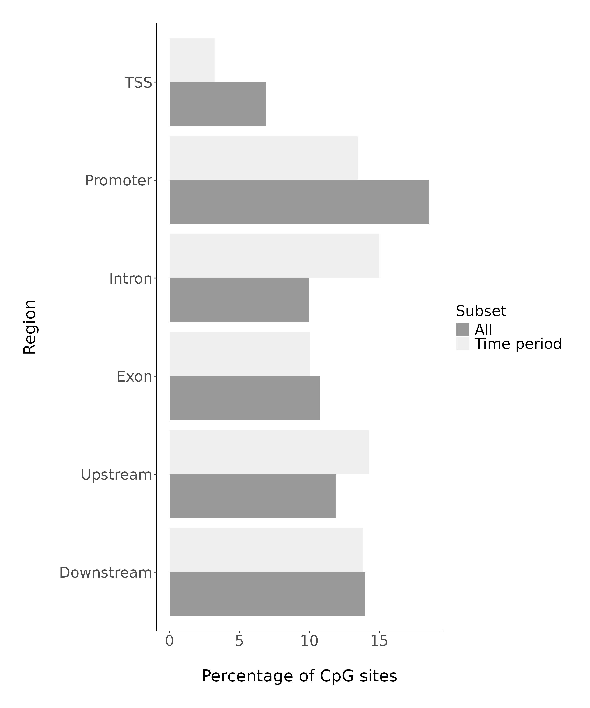

### load packages
pacman::p_load(tidyverse, data.table, tibble, performance,
parallel, lmerTest, tidystats)
### load epi data
load(file = "data/processed/methylkit_prepost_long_onlyvar_thres0.3_min_0.5_group.RData")
### load phenotype data
load("data/phenotypes/fulldata_complete_epi_withdates.RData")
prepost <- subset(all_pheno_epi, !is.na(prepost)) #phenotype dataset also consists of other individuals not part of this study
### merge with metadata
prepost_long <- left_join(prepost_long, prepost[,c("id", "prepost", "Core", "year", "born", "site", "fulldate")],
by = c("id", "year", "fulldate"))
### add age data: core males have known full life histories, non-cores were not captured as yearlings
prepost_long <- prepost_long %>% mutate(age_year = as.factor(case_when(Core == "Core" ~ year - born,
Core == "No core" ~ NA)),
age = as.factor(case_when(Core == "Core" & (year - born > 1) ~ "Adult",
Core == "Core" & (year - born == 1) ~ "Yearling",
Core == "No core" ~ "Adult")))
### intuitively, we would want to have "pre-lekking" as the reference level and "post-lekking" being the level compared to "pre", so let's swap these
prepost_long$prepost <- factor(prepost_long$prepost, levels = c("pre", "post"))
### convert data to a list, one per CpG site
data <- prepost_long %>% group_split(chr_pos)5 Changing CpG sites
Identifying CpG sites that change over the lekking season
Next, we want to identify CpG sites that significantly change in methylation level over the lekking season. To do so, we build a generalized linear mixed effect model per CpG site, using the time period (pre- or post-lekking) as a fixed effect.
Moreover, as there are (sometimes) multiple samples for each individual, we correct for the non-independence of individuals by including ID as a random effect, nested within lek. The response variables in these models are both the number of methylated and number of unmethylated C’s, using the cbind function.
5.1 Prepare the data
5.2 Function to run the model
Below you will find the full model used to 1) run the model in parallel per CpG site and 2) collect the output in a dataframe. Most importantly, this is the formula run for the model:
lme4::glmer(cbind(numC, numT) ~ prepost + (1|id), family = "binomial")Code
### define function to collect overdispersion statistics
overdisp.lmer_fun <- function(model) {
vpars <- function(m) {
nrow(m)*(nrow(m)+1)/2
}
model.df <- sum(sapply(VarCorr(model),vpars))+length(fixef(model))
rdf <- nrow(model.frame(model))-model.df
rp <- residuals(model,type="pearson")
Pearson.chisq <- sum(rp^2)
prat <- Pearson.chisq/rdf
pval <- pchisq(Pearson.chisq, df=rdf, lower.tail=FALSE)
data.frame(chisq=Pearson.chisq,ratio=prat,rdf=rdf,p=pval)
}
### build function to run the model
function_model_glmer <- function(df){tryCatch({
chr_pos <- as.character(df[1,1])
df <- as.data.frame(df)
df$prepost <- as.factor(df$prepost)
df$id <- as.factor(df$id)
# model
model <- lme4::glmer(cbind(numC, numT) ~ prepost + (1|id), family = "binomial", df)
#fixed effects
prepost_estimate <- summary(model)$coefficients[2,1]
prepost_se <- summary(model)$coefficients[2,2]
prepost_zval <- summary(model)$coefficients[2,3]
prepost_pval <- summary(model)$coefficients[2,4]
#random effects
id_sd <- attributes(VarCorr(model)$id)$stddev
id_variance <- data.frame(VarCorr(model), comp="Variance")[1,4]
rsqc <- performance::r2(model)$R2_conditional #fixed plus random effects relative to overall variance
rsqm <- performance::r2(model)$R2_marginal #fixed effects relative to overall variance
dispersion.chisq <- overdisp.lmer_fun(model)[1,1]
dispersion.ratio <- overdisp.lmer_fun(model)[1,2]
dispersion.rdf <- overdisp.lmer_fun(model)[1,3]
dispersion.pval <- overdisp.lmer_fun(model)[1,4]
isSingular <- isSingular(model)
if(is.null(summary(model)$optinfo$conv$lme4$messages )){
convergence <- NA
}
if(!is.null(summary(model)$optinfo$conv$lme4$messages )){
convergence <- summary(model)$optinfo$conv$lme4$messages
}
icc_id <- icc(model, by_group = TRUE, tolerance = 0)[1,2]
return(data.frame(chr_pos=chr_pos,
prepost_estimate = prepost_estimate,
prepost_se = prepost_se,
prepost_zval = prepost_zval,
prepost_pval = prepost_pval,
id_sd = id_sd,
id_variance = id_variance,
rsqc = rsqc,
rsqm = rsqm,
dispersion.chisq = dispersion.chisq,
dispersion.ratio = dispersion.ratio,
dispersion.rdf = dispersion.rdf,
dispersion.pval = dispersion.pval,
isSingular = isSingular,
convergence = convergence,
icc_id = icc_id
))
}, error = function(e){cat("ERROR :", conditionMessage(e), "\n");print(chr_pos)})
}5.3 Run the model
Here, we run the model in parallel, and next exclude CpG sites where there was overdispersion or convergence errors. After this filter step, we apply an FDR multiple-testing correction.
### run the model in parallel per CpG site (list item)
out_glmer <- parallel::mclapply(data, function_model_glmer, mc.cores=4)
out_glmer <- do.call(rbind.data.frame, out_glmer)5.4 Exclude models that did not convergence
#### Exclude models that did not converge ####
out_glmer_raw_conv <- subset(out_glmer_raw, convergence == "boundary (singular) fit: see help('isSingular')" | is.na(convergence))
nrow(out_glmer_raw_conv) / nrow(out_glmer_raw) * 100 # retain 97.5%, 345937 out of 354765When excluding models with convergence warnings/errors, we retain 97% of models, 345,983 out of 354,765 CpG site models.
5.5 Explore and filter for overdispersion
We can plot a histogram of the dispersion ratio and make a QQ plot to identify whether there is under/overdispersion and how to best filter for it.
 
Next, we filter out the sites with an overdispersion ratio higher than the 95 percentile.
## filter for 95 percentile
out_glmer<- subset(out_glmer_raw, dispersion.ratio < as.vector(quantile(out_glmer_raw$dispersion.ratio, 0.95)))We are then left with a total of 328,640 CpG site models.

5.6 FDR-correction
After excluding CpG site models with overdispersion, we apply a multiple-testing correction using the false discovery rate (FDR).
out_glmer$prepost_qval <- p.adjust(out_glmer$prepost_pval, method = "fdr", n = nrow(out_glmer))5.7 Filter for average methylation % differences
A “changing CpG site” is then defined as a CpG site with a significant effect of time period (FDR-corrected q-value < 0.05) and at a mean difference in methylation % (across individuals) of at least -10% or 10%.
We first have to calculate delta methylation (post-lekking methylation % minus pre-lekking methylation %) in order to get this average.
Code
### Calculate delta methylation by matching up pre-post ####
delta_meth <- left_join(subset(prepost_long, prepost == "pre"),
subset(prepost_long, prepost == "post")[,c("chr_pos", "lib_id", "epi_nr", "lib", "methperc", "cov", "id", "year", "fulldate")],
by = c("chr_pos", "id", "year"), suffix = c("_pre", "_post"))
delta_meth <- delta_meth %>% dplyr::select(-c(numC, numT, n_sample, prepost))
delta_meth <- delta_meth %>% relocate(c(id, year, born:age), .before=lib_id_pre)
delta_meth <- delta_meth %>% mutate(delta_meth = methperc_post - methperc_pre, .after =born)
delta_meth <- delta_meth %>% mutate(diff_date = fulldate_post - fulldate_pre)
delta_meth$diff_date <- as.numeric(delta_meth$diff_date)
# this file contains per CpG site the delta methylation levels per individual
### Calculate average delta_meth per CpG site across individuals
mean_delta_meth <- delta_meth %>% group_by(chr_pos) %>% summarise_at(vars(delta_meth), funs(mean(., na.rm=TRUE)))
names(mean_delta_meth)[2] <- "mean_delta_meth"### Combine mean delta methylation with the model output
out_glmer <- left_join(out_glmer, mean_delta_meth, by = "chr_pos")
### Filter min absolute mean methylation of 10%
sub_glmer_prepost <- subset(out_glmer, prepost_qval < 0.05 & abs(mean_delta_meth) >= 0.1)
### Save original data (per CpG site per individual) for models but only subset significant CpG sites
changing_cpg <- subset(prepost_long, chr_pos %in% sub_glmer_prepost$chr_pos)
save(changing_cpg, file="results/modeloutput/changing/changing_sites_glmer.RData")
### Save the model output
save(out_glmer, file="results/modeloutput/changing/modeloutput_glmer.RData")A total of 1,026 CpG sites significantly change across the lekking period.
5.8 Plotting
5.8.1 Volcano and Manhattan plots
Next, we make a volcano plot to visualise the results.
Code
out_glmer <- out_glmer %>% mutate(sig = as.factor(case_when(abs(mean_delta_meth) >= 0.1 & prepost_qval < 0.05 ~ "sig", TRUE ~ "nonsig")))
ggplot(out_glmer, aes(x = mean_delta_meth, y = -log10(as.numeric(prepost_qval)))) +
geom_point(size=4, alpha=0.5, aes(col = as.factor(sig))) +
labs(x = expression("Mean "*Delta*" methylation %"), y = "-log10(q-value)") +
scale_color_manual(values=c("grey60", clrs[4])) +
geom_hline(yintercept = -log10(0.05), col = "darkred", linetype = "dotted", linewidth = 1) +
geom_vline(xintercept = -0.1, col = "darkred", linetype = "dotted", linewidth = 1) +
geom_vline(xintercept = 0.1, col = "darkred", linetype = "dotted", linewidth = 1) +
theme(legend.position="none") -> volcano_change
Interestingly, there seems to more CpG sites that increase in methylation over time compared to CpG sites that decrease in methylation over time (807 CpG sites increase, 219 decrease in methylation %).
We can also look at the distribution of CpG sites across the genome in a Manhattan plot.
Code
load("data/scaffold_names_dovetail.RData")
# Split the chr_pos column into two columns based on the first "_"
split_chr_pos <- strsplit(out_glmer$chr_pos, "_", fixed = TRUE)
# Extract the numbers following HRSCAF=XXX_number
out_glmer$chr <- paste0(sapply(split_chr_pos, "[", 1), "_",
sapply(split_chr_pos, "[", 2), ";",
sapply(split_chr_pos, "[", 4), "=",
sapply(split_chr_pos, "[", 5))
out_glmer$pos <- as.numeric(sapply(split_chr_pos, "[", 6))
# join
out_glmer <- left_join(out_glmer, genome[,c("contig", "scaf_nr")], by = c("chr" = "contig"))
# plot
# lmer
test <- sample_n(out_glmer, 100)
out_glmer <- out_glmer %>% mutate(col = case_when(scaf_nr %% 2 == 0 ~ "even",
TRUE ~ "odd"))
shade <- out_glmer %>%
subset(scaf_nr <= 30) %>%
group_by(scaf_nr) %>%
summarise(min = min(pos), max = max(pos)) %>%
mutate(min = case_when(scaf_nr == 2 | scaf_nr == 4 | scaf_nr == 6 | scaf_nr == 8 | scaf_nr == 10 |
scaf_nr == 12 | scaf_nr == 14 | scaf_nr == 16 | scaf_nr == 18 | scaf_nr == 20 |
scaf_nr == 22 | scaf_nr == 24 | scaf_nr == 26 | scaf_nr == 28 | scaf_nr == 30 ~ 0,
TRUE ~ min)) %>%
mutate(max = case_when(scaf_nr == 2 | scaf_nr == 4 | scaf_nr == 6 | scaf_nr == 8 | scaf_nr == 10 |
scaf_nr == 12 | scaf_nr == 14 | scaf_nr == 16 | scaf_nr == 18 | scaf_nr == 20 |
scaf_nr == 22 | scaf_nr == 24 | scaf_nr == 26 | scaf_nr == 28 | scaf_nr == 30 ~ 0,
TRUE ~ max))
clrs <- viridisLite::viridis(6)
out_glmer %>% subset(scaf_nr <= 30) %>%
ggplot(aes(x = pos, y = -log10(as.numeric(prepost_pval)))) +
geom_point(size=5, alpha=0.5, aes(col = as.factor(col), fill = as.factor(col))) +
facet_grid(~scaf_nr,scales = 'free_x', space = 'free_x', switch = 'x') +
labs(x = "Scaffold number", y = expression(-log[10]*"(p-value)")) +
#geom_rect(data=shade, aes(xmin=min, xmax=max, ymin=0, ymax=-log10(as.numeric(test$prepost_pval))),
# alpha=0.5, fill = "#eceff4") + # "#f7f7f7" "#eceff4"
#xlim(-1, 1)+
scale_color_manual(values=c(clrs[2], clrs[4])) +
scale_fill_manual(values=alpha(c(clrs[2], clrs[4]), 0.5)) +
geom_hline(yintercept = -log10(0.05/nrow(out_glmer)), col = "darkred", linetype = "dotted", linewidth = 1) +
theme(axis.text.x = element_blank(),
panel.spacing = unit(0, "lines"),
plot.margin = margin(r = 0.5, l = 0.1, b = 0.1, t = 0.1, unit = "cm"),
axis.line.x = element_blank(),
legend.position="none",
axis.title.x = element_text(margin=margin(t=10)),
axis.title.y = element_text(margin=margin(r=5)),
axis.ticks.x = element_blank(),
axis.line.y = element_blank()) -> manhattan_change
5.8.2 Raw data
To assess whether the models performed well, I also plotted the raw data of the five most significantly changing CpG sites.
# raw plot for the 1st significant CpG site, repeat for the other 4 and combine with cowplot
#| code-fold: true
out_glmer <- out_glmer %>% arrange(prepost_qval)
subset(changing_cpg, chr_pos == out_glmer$chr_pos[1]) %>%
arrange(id, year) %>%
ggplot(., aes(x = prepost, y = methperc))+
geom_boxplot(linewidth=1, outlier.shape=NA) +
geom_path(aes(group = id_year), alpha = 0.8, col = "grey60", position = position_jitter(width = 0.1, seed = 3922)) +
geom_point(aes(alpha = 0.8, size=cov), col = clrs[4], position = position_jitter(width = 0.1, seed = 3922)) +
labs(x = "Time period", y = "Methylation percentage", subtitle = out_glmer$chr_pos[1]) +
theme(legend.position="none") +
ylim(0,1)
5.9 Annotation
5.9.1 Based on black grouse annotation
Next, we annotate in which regions these changing CpG sites are located in based on the black grouse annotation.
Code
#### Annotation of changing CpG sites: gene regions #####
### Packages ####
pacman::p_load(genomation, GenomicFeatures, rtracklayer,
GenomicRanges)
### Combine all sites vs changing sites
cpg_all <- out_glmer %>% dplyr::select(c(chr_pos, prepost_qval))
names(cpg_all)[2] <- "parameter_qval"
cpg_all$parameter <- "all"
cpg_changing_select <- changing_cpg %>% dplyr::select(c(chr_pos, prepost_qval))
names(cpg_changing_select)[2] <- "parameter_qval"
cpg_changing_select$parameter <- "time_period"
all_models_sig <- rbind(cpg_all, cpg_changing_select)
### Rename chr_pos and divide ###
all_models_sig$chr_pos <- gsub("__", ";", all_models_sig$chr_pos)
all_models_sig$chr_pos <- gsub("HRSCAF_", "HRSCAF=", all_models_sig$chr_pos, )
# Extract the numbers following HRSCAF=XXX_number
# Split the chr_pos column into two columns based on the first "_"
split_chr_pos <- strsplit(all_models_sig$chr_pos, "_", fixed = TRUE)
all_models_sig$chr <- paste0(sapply(split_chr_pos, "[", 1), "_",
sapply(split_chr_pos, "[", 2))
all_models_sig$pos <- sapply(split_chr_pos, "[", 3)
all_models_sig <- all_models_sig %>%
relocate(chr, .after = chr_pos) %>%
relocate(pos, .after = chr_pos)
#revert scafnames
all_models_sig$chr_pos <- gsub(";","__", all_models_sig$chr_pos)
all_models_sig$chr_pos <- gsub("HRSCAF=", "HRSCAF_", all_models_sig$chr_pos)
all_models_sig$chr <- gsub(";","__", all_models_sig$chr)
all_models_sig$chr <- gsub("HRSCAF=", "HRSCAF_", all_models_sig$chr)
### Load annotation data
annotation_dir <- "~/PhD_grouse/grouse-annotation/output"
promoter=unique(gffToGRanges(paste0(annotation_dir, "/promoters.gff3")))
genes=unique(gffToGRanges(paste0(annotation_dir, "/genes.gff3")))
TSS=unique(gffToGRanges(paste0(annotation_dir, "/TSS.gff3")))
exons_gene=unique(gffToGRanges(paste0(annotation_dir, "/exons_gene.gff3")))
introns=unique(gffToGRanges(paste0(annotation_dir, "/introns_transcripts.gff3")))
downstream=unique(gffToGRanges(paste0(annotation_dir, "/downstream.gff3")))
upstream=unique(gffToGRanges(paste0(annotation_dir, "/upstream.gff3")))
threeUTR =unique(gffToGRanges(paste0(annotation_dir, "/threeUTRs.gff3")))
fiveUTR=unique(gffToGRanges(paste0(annotation_dir, "/fiveUTRs.gff3")))
#### Annotate ####
all_models_sig$end <- all_models_sig$pos
all_models_sig$start <- all_models_sig$pos
sig_gr <- as(all_models_sig, "GRanges")
sig_promoter <- subsetByOverlaps(sig_gr, promoter) %>% as.data.frame() %>%
add_column("region" = "promoter", .after="parameter") %>%
dplyr::select(-c(seqnames:strand))
sig_gene <- as.data.frame(subsetByOverlaps(sig_gr, genes)) %>% as.data.frame() %>%
add_column("region" = "gene", .after="parameter") %>%
dplyr::select(-c(seqnames:strand))
sig_tss <- as.data.frame(subsetByOverlaps(sig_gr, TSS)) %>% as.data.frame() %>%
add_column("region" = "TSS", .after="parameter") %>%
dplyr::select(-c(seqnames:strand))
sig_exon <- as.data.frame(subsetByOverlaps(sig_gr, exons_gene)) %>% as.data.frame() %>%
add_column("region" = "exon", .after="parameter") %>%
dplyr::select(-c(seqnames:strand))
sig_intron <- as.data.frame(subsetByOverlaps(sig_gr, introns)) %>% as.data.frame() %>%
add_column("region" = "intron", .after="parameter") %>%
dplyr::select(-c(seqnames:strand))
sig_down <- as.data.frame(subsetByOverlaps(sig_gr, downstream)) %>% as.data.frame() %>%
add_column("region" = "downstream", .after="parameter") %>%
dplyr::select(-c(seqnames:strand))
sig_up <- as.data.frame(subsetByOverlaps(sig_gr, upstream)) %>% as.data.frame() %>%
add_column("region" = "upstream", .after="parameter") %>%
dplyr::select(-c(seqnames:strand))
sig_threeUTR <- as.data.frame(subsetByOverlaps(sig_gr, threeUTR)) %>% as.data.frame() %>%
add_column("region" = "threeUTR", .after="parameter") %>%
dplyr::select(-c(seqnames:strand))
sig_fiveUTR <- as.data.frame(subsetByOverlaps(sig_gr, fiveUTR)) %>% as.data.frame() %>%
add_column("region" = "fiveUTR", .after="parameter") %>%
dplyr::select(-c(seqnames:strand))
all_models_sig_annotated <- rbind(sig_promoter, sig_gene,
sig_tss, sig_exon, sig_intron, sig_down,
sig_up, sig_threeUTR, sig_fiveUTR)
#### Summarise number of sites per region ####
sum_annotated <- as.data.frame(table(as.factor(all_models_sig_annotated$region), all_models_sig_annotated$parameter))
names(sum_annotated) <- c("region", "model", "n")
sum_annotated$model <- gsub("all", "All", sum_annotated$model)
sum_annotated$model <- gsub("time_period", "Time period", sum_annotated$model)
sum_annotated$region <- gsub("downstream", "Downstream", sum_annotated$region)
sum_annotated$region <- gsub("upstream", "Upstream", sum_annotated$region)
sum_annotated$region <- gsub("exon", "Exon", sum_annotated$region)
sum_annotated$region <- gsub("fiveUTR", "5' UTR", sum_annotated$region)
sum_annotated$region <- gsub("gene", "Gene body", sum_annotated$region)
sum_annotated$region <- gsub("intron", "Intron", sum_annotated$region)
sum_annotated$region <- gsub("promoter", "Promoter", sum_annotated$region)
sum_annotated$region <- gsub("threeUTR", "3' UTR", sum_annotated$region)
sum_annotated$region <- factor(sum_annotated$region, levels = c("3' UTR", "5' UTR", "Downstream", "Upstream", "Gene body", "Exon", "Intron", "Promoter", "TSS"))
# add total sig CpGs
sum_annotated <- sum_annotated %>% mutate(n_total = case_when(
model == "All" ~ 354649,
model == "Time period" ~ nrow(cpg_change)))
sum_annotated <- sum_annotated %>% mutate(perc = n / n_total * 100)| region | model | n | n_total | perc |
|---|---|---|---|---|
| Downstream | All | 134424 | 328640 | 40.9031159 |
| Exon | All | 56072 | 328640 | 17.0618306 |
| 5' UTR | All | 1531 | 328640 | 0.4658593 |
| Gene body | All | 96490 | 328640 | 29.3603944 |
| Intron | All | 41272 | 328640 | 12.5584226 |
| Promoter | All | 83697 | 328640 | 25.4676850 |
| 3' UTR | All | 279 | 328640 | 0.0848953 |
| TSS | All | 22620 | 328640 | 6.8829114 |
| Upstream | All | 151831 | 328640 | 46.1997931 |
| Downstream | Time period | 402 | 1026 | 39.1812865 |
| Exon | Time period | 154 | 1026 | 15.0097466 |
| 5' UTR | Time period | 9 | 1026 | 0.8771930 |
| Gene body | Time period | 320 | 1026 | 31.1890838 |
| Intron | Time period | 169 | 1026 | 16.4717349 |
| Promoter | Time period | 171 | 1026 | 16.6666667 |
| 3' UTR | Time period | 1 | 1026 | 0.0974659 |
| TSS | Time period | 33 | 1026 | 3.2163743 |
| Upstream | Time period | 451 | 1026 | 43.9571150 |

5.9.2 GOrilla
We next run the list of gene IDs of the significant sites as the target list as well as the list of gene IDs from all CpG sites that we ran the model on as a background list. I used default settings and the analysis was done based on a human model (Homo sapiens). The result can be seen below.
library(readxl)
table_go_function_changing <- read_excel("../results/modeloutput/changing/GOFUNCTION_changing_similar.xlsx")
table_go_function_changing %>% select(-Genes) %>% filter(grepl("^GO", table_go_function_changing$`GO Term`)) %>% kbl() %>% kable_classic_2() %>% scroll_box(width = "99%", height = "200px")| GO Term | Description | P-value | FDR q-value | Enrichment | N | B | n | b |
|---|---|---|---|---|---|---|---|---|
| GO:0000987 | proximal promoter sequence-specific DNA binding | 5.63e-05 | 0.219 | 1.65 | 8813 | 477 | 683 | 61 |
| GO:0000978 | RNA polymerase II proximal promoter sequence-specific DNA binding | 1.26e-04 | 0.246 | 1.62 | 8813 | 470 | 683 | 59 |
| GO:1990837 | sequence-specific double-stranded DNA binding | 1.42e-04 | 0.185 | 1.51 | 8813 | 639 | 683 | 75 |
| GO:0043565 | sequence-specific DNA binding | 1.54e-04 | 0.150 | 1.49 | 8813 | 694 | 683 | 80 |
| GO:0001012 | RNA polymerase II regulatory region DNA binding | 2.08e-04 | 0.162 | 1.55 | 8813 | 541 | 683 | 65 |
| GO:0000977 | RNA polymerase II regulatory region sequence-specific DNA binding | 2.08e-04 | 0.135 | 1.55 | 8813 | 541 | 683 | 65 |
| GO:0000976 | transcription regulatory region sequence-specific DNA binding | 2.13e-04 | 0.118 | 1.52 | 8813 | 594 | 683 | 70 |
| GO:0044212 | transcription regulatory region DNA binding | 2.35e-04 | 0.115 | 1.52 | 8813 | 596 | 683 | 70 |
| GO:0001067 | regulatory region nucleic acid binding | 2.47e-04 | 0.107 | 1.51 | 8813 | 597 | 683 | 70 |
| GO:0003700 | DNA-binding transcription factor activity | 3.51e-04 | 0.137 | 1.53 | 8813 | 530 | 683 | 63 |
| GO:0060228 | phosphatidylcholine-sterol O-acyltransferase activator activity | 4.64e-04 | 0.164 | 12.90 | 8813 | 3 | 683 | 3 |
| GO:0003690 | double-stranded DNA binding | 8.25e-04 | 0.268 | 1.43 | 8813 | 688 | 683 | 76 |
| GO:0005245 | voltage-gated calcium channel activity | 9.89e-04 | 0.297 | 4.11 | 8813 | 22 | 683 | 7 |
table_go_process_changing <- read_excel("../results/modeloutput/changing/GOPROCESS_changing_similar.xlsx")
table_go_process_changing %>% select(-Genes) %>% filter(grepl("^GO", table_go_process_changing$`GO Term`)) %>% kbl() %>% kable_classic_2() %>% scroll_box(width = "99%", height = "200px")| GO Term | Description | P-value | FDR q-value | Enrichment | N | B | n | b |
|---|---|---|---|---|---|---|---|---|
| GO:0045664 | regulation of neuron differentiation | 3.00e-07 | 0.00426 | 1.99 | 8813 | 370 | 683 | 57 |
| GO:2000026 | regulation of multicellular organismal development | 1.10e-06 | 0.00772 | 1.50 | 8813 | 1067 | 683 | 124 |
| GO:0050767 | regulation of neurogenesis | 2.30e-06 | 0.01030 | 1.81 | 8813 | 450 | 683 | 63 |
| GO:0051094 | positive regulation of developmental process | 2.60e-06 | 0.00893 | 1.62 | 8813 | 702 | 683 | 88 |
| GO:0045597 | positive regulation of cell differentiation | 2.90e-06 | 0.00796 | 1.74 | 8813 | 512 | 683 | 69 |
| GO:0051960 | regulation of nervous system development | 4.30e-06 | 0.00989 | 1.74 | 8813 | 498 | 683 | 67 |
| GO:0050793 | regulation of developmental process | 7.20e-06 | 0.01400 | 1.40 | 8813 | 1328 | 683 | 144 |
| GO:0045666 | positive regulation of neuron differentiation | 8.20e-06 | 0.01390 | 2.18 | 8813 | 207 | 683 | 35 |
| GO:0022603 | regulation of anatomical structure morphogenesis | 1.45e-05 | 0.02200 | 1.63 | 8813 | 587 | 683 | 74 |
| GO:0060284 | regulation of cell development | 1.55e-05 | 0.02110 | 1.67 | 8813 | 517 | 683 | 67 |
| GO:0045595 | regulation of cell differentiation | 2.09e-05 | 0.02590 | 1.46 | 8813 | 954 | 683 | 108 |
| GO:0048522 | positive regulation of cellular process | 4.19e-05 | 0.04770 | 1.22 | 8813 | 2823 | 683 | 266 |
| GO:0050769 | positive regulation of neurogenesis | 5.89e-05 | 0.06180 | 1.93 | 8813 | 254 | 683 | 38 |
| GO:0010720 | positive regulation of cell development | 6.99e-05 | 0.06810 | 1.83 | 8813 | 303 | 683 | 43 |
| GO:1903506 | regulation of nucleic acid-templated transcription | 7.98e-05 | 0.07260 | 1.30 | 8813 | 1645 | 683 | 166 |
| GO:0006355 | regulation of transcription, DNA-templated | 7.98e-05 | 0.06810 | 1.30 | 8813 | 1645 | 683 | 166 |
| GO:2001141 | regulation of RNA biosynthetic process | 8.81e-05 | 0.07080 | 1.30 | 8813 | 1648 | 683 | 166 |
| GO:0001525 | angiogenesis | 1.20e-04 | 0.09140 | 2.18 | 8813 | 154 | 683 | 26 |
| GO:0051004 | regulation of lipoprotein lipase activity | 1.31e-04 | 0.09380 | 6.45 | 8813 | 12 | 683 | 6 |
| GO:1903508 | positive regulation of nucleic acid-templated transcription | 1.63e-04 | 0.11100 | 1.42 | 8813 | 880 | 683 | 97 |
| GO:0045893 | positive regulation of transcription, DNA-templated | 1.63e-04 | 0.10600 | 1.42 | 8813 | 880 | 683 | 97 |
| GO:0021781 | glial cell fate commitment | 1.68e-04 | 0.10400 | 10.32 | 8813 | 5 | 683 | 4 |
| GO:1902680 | positive regulation of RNA biosynthetic process | 1.70e-04 | 0.10100 | 1.42 | 8813 | 881 | 683 | 97 |
| GO:0051962 | positive regulation of nervous system development | 1.85e-04 | 0.10500 | 1.80 | 8813 | 287 | 683 | 40 |
| GO:0007399 | nervous system development | 1.92e-04 | 0.10500 | 2.05 | 8813 | 176 | 683 | 28 |
| GO:0051239 | regulation of multicellular organismal process | 2.02e-04 | 0.10600 | 1.28 | 8813 | 1627 | 683 | 162 |
| GO:0048518 | positive regulation of biological process | 2.04e-04 | 0.10300 | 1.18 | 8813 | 3168 | 683 | 289 |
| GO:0051252 | regulation of RNA metabolic process | 2.37e-04 | 0.11500 | 1.26 | 8813 | 1809 | 683 | 177 |
| GO:0010628 | positive regulation of gene expression | 2.88e-04 | 0.13500 | 1.35 | 8813 | 1141 | 683 | 119 |
| GO:0071526 | semaphorin-plexin signaling pathway | 3.00e-04 | 0.13700 | 4.30 | 8813 | 24 | 683 | 8 |
| GO:0048523 | negative regulation of cellular process | 3.04e-04 | 0.13400 | 1.21 | 8813 | 2480 | 683 | 232 |
| GO:0031326 | regulation of cellular biosynthetic process | 3.11e-04 | 0.13200 | 1.24 | 8813 | 2057 | 683 | 197 |
| GO:0032502 | developmental process | 3.33e-04 | 0.13800 | 1.20 | 8813 | 2606 | 683 | 242 |
| GO:0006357 | regulation of transcription by RNA polymerase II | 3.68e-04 | 0.14800 | 1.32 | 8813 | 1228 | 683 | 126 |
| GO:0050770 | regulation of axonogenesis | 3.95e-04 | 0.15400 | 2.33 | 8813 | 105 | 683 | 19 |
| GO:0045944 | positive regulation of transcription by RNA polymerase II | 3.99e-04 | 0.15100 | 1.47 | 8813 | 639 | 683 | 73 |
| GO:0070830 | bicellular tight junction assembly | 4.07e-04 | 0.15000 | 3.75 | 8813 | 31 | 683 | 9 |
| GO:0120192 | tight junction assembly | 4.07e-04 | 0.14600 | 3.75 | 8813 | 31 | 683 | 9 |
| GO:0120193 | tight junction organization | 4.07e-04 | 0.14300 | 3.75 | 8813 | 31 | 683 | 9 |
| GO:0010975 | regulation of neuron projection development | 4.24e-04 | 0.14500 | 1.76 | 8813 | 279 | 683 | 38 |
| GO:0031328 | positive regulation of cellular biosynthetic process | 4.49e-04 | 0.15000 | 1.35 | 8813 | 1074 | 683 | 112 |
| GO:0034371 | chylomicron remodeling | 4.64e-04 | 0.15100 | 12.90 | 8813 | 3 | 683 | 3 |
| GO:0010873 | positive regulation of cholesterol esterification | 4.64e-04 | 0.14700 | 12.90 | 8813 | 3 | 683 | 3 |
| GO:1905048 | regulation of metallopeptidase activity | 4.73e-04 | 0.14700 | 8.60 | 8813 | 6 | 683 | 4 |
| GO:0033700 | phospholipid efflux | 4.73e-04 | 0.14300 | 8.60 | 8813 | 6 | 683 | 4 |
| GO:0034370 | triglyceride-rich lipoprotein particle remodeling | 4.73e-04 | 0.14000 | 8.60 | 8813 | 6 | 683 | 4 |
| GO:0009893 | positive regulation of metabolic process | 4.81e-04 | 0.14000 | 1.23 | 8813 | 1977 | 683 | 189 |
| GO:0030154 | cell differentiation | 4.81e-04 | 0.13700 | 1.36 | 8813 | 1008 | 683 | 106 |
| GO:0010896 | regulation of triglyceride catabolic process | 5.00e-04 | 0.13900 | 6.45 | 8813 | 10 | 683 | 5 |
| GO:0040008 | regulation of growth | 5.06e-04 | 0.13800 | 1.65 | 8813 | 351 | 683 | 45 |
| GO:0022604 | regulation of cell morphogenesis | 5.24e-04 | 0.14000 | 1.74 | 8813 | 282 | 683 | 38 |
| GO:0031325 | positive regulation of cellular metabolic process | 5.57e-04 | 0.14600 | 1.24 | 8813 | 1815 | 683 | 175 |
| GO:0001558 | regulation of cell growth | 5.59e-04 | 0.14400 | 1.84 | 8813 | 225 | 683 | 32 |
| GO:0010557 | positive regulation of macromolecule biosynthetic process | 5.70e-04 | 0.14400 | 1.35 | 8813 | 1024 | 683 | 107 |
| GO:0031323 | regulation of cellular metabolic process | 5.80e-04 | 0.14400 | 1.16 | 8813 | 3137 | 683 | 283 |
| GO:0051254 | positive regulation of RNA metabolic process | 6.42e-04 | 0.15700 | 1.36 | 8813 | 937 | 683 | 99 |
| GO:0045665 | negative regulation of neuron differentiation | 6.77e-04 | 0.16200 | 2.19 | 8813 | 118 | 683 | 20 |
| GO:0040011 | locomotion | 7.27e-04 | 0.17100 | 1.50 | 8813 | 534 | 683 | 62 |
| GO:0048589 | developmental growth | 7.28e-04 | 0.16800 | 1.98 | 8813 | 163 | 683 | 25 |
| GO:0031113 | regulation of microtubule polymerization | 7.36e-04 | 0.16700 | 3.82 | 8813 | 27 | 683 | 8 |
| GO:0048519 | negative regulation of biological process | 7.87e-04 | 0.17600 | 1.18 | 8813 | 2777 | 683 | 253 |
| GO:0048869 | cellular developmental process | 7.87e-04 | 0.17300 | 1.27 | 8813 | 1449 | 683 | 143 |
| GO:0009891 | positive regulation of biosynthetic process | 8.10e-04 | 0.17600 | 1.32 | 8813 | 1091 | 683 | 112 |
| GO:0019219 | regulation of nucleobase-containing compound metabolic process | 8.19e-04 | 0.17500 | 1.22 | 8813 | 1997 | 683 | 189 |
| GO:0009889 | regulation of biosynthetic process | 8.28e-04 | 0.17400 | 1.21 | 8813 | 2106 | 683 | 198 |
| GO:0015698 | inorganic anion transport | 9.42e-04 | 0.19500 | 2.45 | 8813 | 79 | 683 | 15 |
| GO:0040007 | growth | 9.55e-04 | 0.19500 | 1.94 | 8813 | 166 | 683 | 25 |
| GO:0030516 | regulation of axon extension | 9.95e-04 | 0.20000 | 2.77 | 8813 | 56 | 683 | 12 |
Interestingly, there’s a lot of GO terms that are related to gene regulation - fitting the story perfectly! Moreover, the component that was highly significant is the “chylomicron”.
Wikipedia: “Chylomicrons transport lipids absorbed from the intestine to adipose, cardiac, and skeletal muscle tissue, where their triglyceride components are hydrolyzed by the activity of the lipoprotein lipase, allowing the released free fatty acids to be absorbed by the tissues. When a large portion of the triglyceride core has been hydrolyzed, chylomicron remnants are formed and are taken up by the liver, thereby also transferring dietary fat to the liver.”